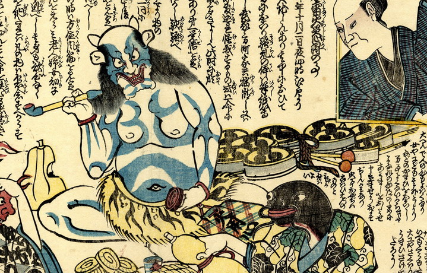

鬼；オニ，雷；カミナリ

煙管を手に座る鬼。虎柄の腰巻きをつけている。体は青白く、鋭い牙と角が生えている。背後には太鼓と撥が置いてある。
著作者：延寿／出典：親書誌：U426_nichibunken_0222：浮世四案鈔震雷火災心得の事；ウキヨシアンショウジシンカミナリカジココロエノコト／日付：2010／資源識別子：U426_nichibunken_0222_0002_0000
Copyright (c)2010- International Research Center for Japanese Studies, Kyoto, Japan. All rights reserved.